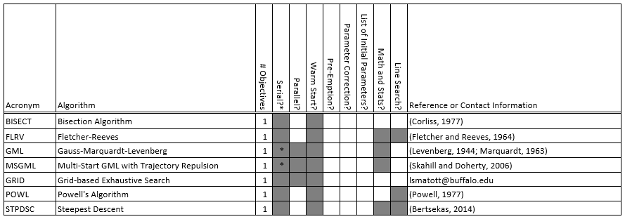
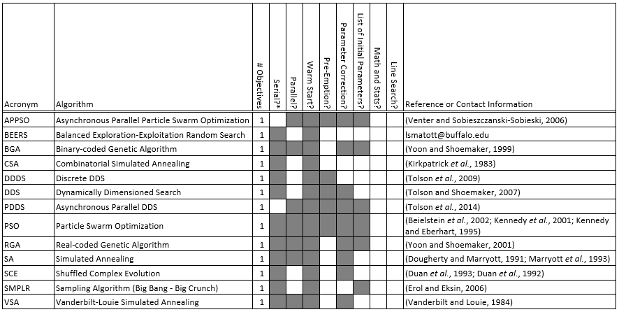
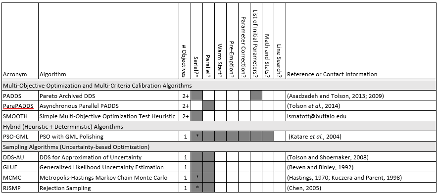
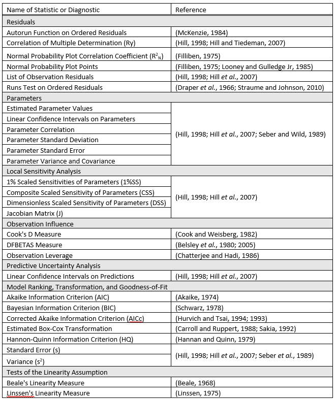

Overview
Basics of OSTRICH Development
OSTRICH implements numerous algorithms. Some of these algorithms are deterministic local search methods, others are heuristic global search methods that incorporate elements of structured randomness, and others act as samplers that seek to delineate parameter probability distributions rather than just identifying a single optimal parameter set. While most of these algorithms are suitable for both calibration and optimization problems, one deterministic algorithm (i.e. Levenberg-Marquardt) is tailored to non-linear least-squares calibration problems. Additionally, two algorithms (i.e. Pareto Archive Dynamically Dimensioned Search and the Simple Multi-Objective Optimization Test Heuristic) are suitable for multi-objective optimization or multi-criteria calibration. Finally, several sampling-based algorithms (i.e. Generalized Likelihood Uncertainty Estimation, Rejection Sampling, and Metropolis-Hastings Markov Chain Monte Carlo) are suitable for uncertainty-based calibration. Overall, these algorithms provide the user with a fair degree of flexibility and enable OSTRICH to tackle a variety of linear and non-linear problems. Furthermore, these problems can have continuously varying (i.e. real-valued) parameters, combinatorial parameters, integer parameters, or a mixture of continuous, combinatorial and integer parameters.
Algorithms
Table 1: Local search algorithms implemented within OSTRICH

Table 2: Global search algorithms implemented within OSTRICH

Table 3: Other optimization algorithms implemented within OSTRICH

Tables 1 to 3 summarize each algorithm implemented in OSTRICH along with appropriate references for detailed descriptions. Algorithms where only contact information is provided are unpublished experimental algorithms and should be used with caution. Some algorithms have been validated against reference implementations. These algorithms include: DDS, PADDS, PSO, GML, BGA, RGA, SA, FLRV, POWL, STPDSC, and SCE.
C/C++ programmers will find it straightforward to extend OSTRICH to include additional search algorithms. Doing so involves extension of an abstract base class (AlgorithmABC) that defines a minimum set of required search algorithm functions, including: Calbrate(), Optimize(), WriteMetrics(), WarmStart(), and Destroy(). These functions typically utilize additional classes that encapsulate parameters (i.e. ParameterGroup), models (i.e. ModelABC), and objective functions (i.e. ObjectiveFunction) which are dynamically instantiated based on a user-supplied configuration file.
OSTRICH also supports a special ProgramType named “ModelEvaluation”. OSTRICH will process the parameter sets listed in the “InitParams” groups when this program type is selected. In this way, users may request evaluation of a specific set of parameters independent of any search algorithm embedded within OSTRICH. For example, such parameter sets could be generated as part of a sensitivity or uncertainty analysis procedure that is run using an external spreadsheet or statistical program. Alternatively, these parameter sets could be generated by an external optimization algorithm. For example, the PIGEON (Program for Interfacing Geoscience models with External Optimization routInes) software package exploits this functionality to link optimizers written in MatLab and Python with “back-box” geoscience models (Matott et al., 2011).
Regression Statistics and Diagnostics
When used for model calibration via a weighted sum of squared errors approach, OSTRICH can compute an extensive suite of post-calibration statistics. OSTRICH can also compute a variety of diagnostic measures that test the validity of the underlying assumptions of the aforementioned statistical measures. Table 4 summarizes the regression statistics and diagnostics implemented in OSTRICH along with appropriate references containing more detailed descriptions. The OSTRICH manual for version 1.6 also contains a detailed description of many of the regression statistics and diagnostics listed in Table 4.
Table 4: Regression statistics and diagnostics implemented in OSTRICH

References
Matott, L. S., Leung, K.,Sim, J. 2011. Application of MATLAB and Python optimizers to two case studies involving groundwater flow and contaminant transport modeling. Computers & Geosciences 37, 1894-1899.
Matott, L. S., Tolson, B. A.,Asadzadeh, M. 2012. A benchmarking framework for simulation-based optimization of environmental models. Environmental Modelling & Software 35, 19-30.